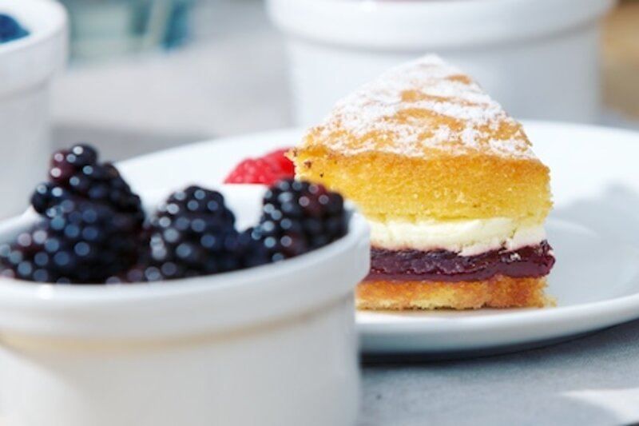

Fruit
Add fruit fillings for texture and flavour
Fruit fillings are used to add texture and flavour to chilled frozen or baked dessert products. Fruit fillings are normally semi-gelatinous and can be either free flowing or gelled and the.

Fruit fillings are used to add texture and flavour to chilled frozen or baked dessert products. Fruit fillings are normally semi-gelatinous and can be either free flowing or gelled and the fruit is either in a puree form or whole fruit pieces are used.
A number of factors such as the use of correct stabiliser system, need to be considered to ensure your fruit filling achieves the quality and consistency that you are looking to achieve.
Fruit
More in this area.
Confectionery fillings
02Fruit compotes
03Fruit jelly
Fruit jelly is traditionally made by using gelatine as gelling agent. Nowadays.
04Fruit preparations
Fruit preparations such as fruit toppings and fillings are used to add texture.
05Glazes
Fruit glazes can be defined as thin, semi gelatinous sweet coatings which add.
06Lemon meringue pie
Lemon Meringue Pie is a type of baked pie, usually made of shortcrust pastry.
Bring us the product.
Tell us what it has to do, how it is produced and where it currently fails. We will tell you what is possible.